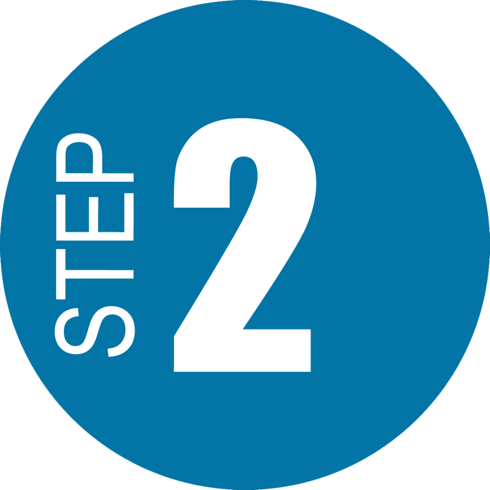

Year 1
In my first year of university, I immersed myself in foundational
computing concepts and programming skills. I began with a
comprehensive study of Computer Foundations, where I explored the
basic principles of computer systems, hardware, software, and
networking. This course provided me with a solid understanding of
how computers operate and interact with each other. Building on this
knowledge, I delved into C Programming, a course that introduced me
to the fundamentals of coding, including syntax, control structures,
data types, and memory management. Through practical assignments and
projects, I honed my problem-solving skills and learned how to write
efficient and effective code. Additionally, I focused on developing
essential Soft Skills, such as effective communication, teamwork,
and time management. These skills are crucial for collaborating with
others, managing projects, and presenting ideas clearly. Together,
these courses laid a strong foundation for my continued studies in
computer science and prepared me for more advanced topics in
subsequent years.

Year 2
In my second year of university, I advanced my studies by tackling
more complex topics in computer science. I began with Data
Algorithms, where I explored various algorithmic techniques for
solving computational problems efficiently. This course emphasized
the importance of designing algorithms with optimal time and space
complexity, and I gained hands-on experience with sorting,
searching, and graph algorithms. Concurrently, I expanded my
programming expertise with C++, diving into object-oriented
programming, classes, and advanced features like templates and
exception handling. This language built upon the skills I acquired
in C Programming, offering a broader set of tools for software
development. Additionally, I learned Python, a versatile and
powerful language known for its readability and ease of use. I
applied Python to data analysis, web development, and scripting
tasks, further enhancing my programming proficiency. Finally, I
studied Networking Concepts, which introduced me to the fundamentals
of network communication, protocols, and security. This course
provided a comprehensive understanding of how data is transmitted
across networks.

Year 3
In my third year of university, I delved into a range of specialized
topics that further broadened my expertise in computer science. I
studied Java, a versatile and widely-used programming language known
for its portability and robustness. Through Java, I explored
object-oriented programming principles, and built applications with
graphical user interfaces and backend functionalities. Additionally,
I learned C#, a language developed by Microsoft, which allowed me to
work with the .NET framework and create Windows applications, as
well as develop web services. I continued to build on my networking
knowledge with an advanced course on Networking, where I studied
network architecture, management, and security in greater depth.
This included exploring more complex networking protocols and
troubleshooting techniques. Another key area of focus was
Information Systems Analysis and Design (ISAD), where I learned
methodologies for analyzing and designing information systems. This
course covered requirements gathering, system modeling, and project
management, equipping me with skills to effectively design and
implement software solutions. Finally, I took a Statistics course
that provided a strong foundation in data analysis, probability, and
statistical inference.

My Fronend Schoolarship
As part of my scholarship focused on frontend development, I had the
opportunity to immerse myself in a range of essential technologies
and frameworks. I began by learning HTML and CSS, which provided me
with a solid foundation in creating structured and styled web pages.
HTML enabled me to build the structural elements of a webpage, while
CSS allowed me to style and layout these elements, ensuring a
visually appealing and responsive design. Next, I delved into
JavaScript, the cornerstone of interactive web development. Through
JavaScript, I learned how to add dynamic behavior to web pages,
manage user interactions, and manipulate the Document Object Model
(DOM) to enhance user experience. Building on these skills, I
studied Java, which expanded my programming capabilities beyond
frontend development and introduced me to object-oriented
programming principles and backend development. To round out my
frontend expertise, I explored React, a powerful JavaScript library
for building user interfaces. React taught me how to create reusable
components, manage state, and efficiently render updates, all of
which are crucial for developing modern, scalable web applications.
This comprehensive curriculum has equipped me with the skills to
create robust, interactive, and visually appealing web applications,
preparing me for a career in frontend development.

UX/UI Design
As part of my scholarship focused on frontend development, I had the
opportunity to immerse myself in a range of essential technologies
and frameworks. I began by learning HTML and CSS, which provided me
with a solid foundation in creating structured and styled web pages.
HTML enabled me to build the structural elements of a webpage, while
CSS allowed me to style and layout these elements, ensuring a
visually appealing and responsive design. Next, I delved into
JavaScript, the cornerstone of interactive web development. Through
JavaScript, I learned how to add dynamic behavior to web pages,
manage user interactions, and manipulate the Document Object Model
(DOM) to enhance user experience. Building on these skills, I
studied Java, which expanded my programming capabilities beyond
frontend development and introduced me to object-oriented
programming principles and backend development. To round out my
frontend expertise, I explored React, a powerful JavaScript library
for building user interfaces. React taught me how to create reusable
components, manage state, and efficiently render updates, all of
which are crucial for developing modern, scalable web applications.
This comprehensive curriculum has equipped me with the skills to
create robust, interactive, and visually appealing web applications,
preparing me for a career in frontend development.